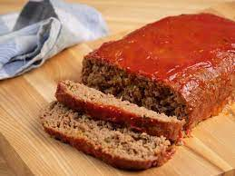

Meat Loaf

Homemade Meat Loaf
This best ever meatloaf recipe lives up to its name
and is my favorite I have found.
Try it and you will see.
Growing up this was one of my favourite meals
Ingredients
- 2 large eggs
- 2/3 cup milk
- 2 teaspoons salt
- 1/4 teaspoon ground black pepper
- 3 slices bread, crumbled
- 1 1/2 pounds ground beef
- 1 Onion, chopped
- 1 cup shredded Cheddar cheese
- 1/2 cup shredded carrot
- 1/4 cup brown sugar
- 1/4 cup ketchup
- 1 tablespoon prepared yellow mustard
Steps
- Preheat the oven to 350 degrees F (175 degrees C).
- Whisk eggs, milk, salt, and ground black pepper
in a large bowl. Add crumbled bread and stir until dissolved. Mix ground beef, onion, Cheddar
cheese, and carrot into bread mixture;transfer mixture to a 9x5-inch loaf pan.
Combine brown sugar, ketchup, and mustard in a small bowl; spread over the meat mixture.
- Bake in the preheated oven until no longer pink in the center, 60 to 75 minutes.
An instant-read thermometer inserted into the center should read at least 160 degrees F (70 degrees C).